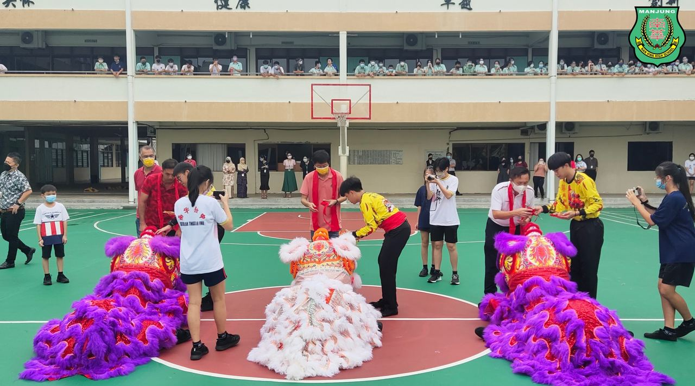
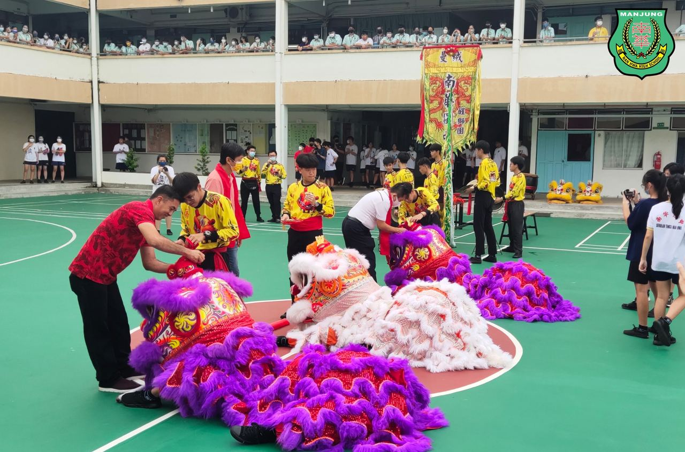
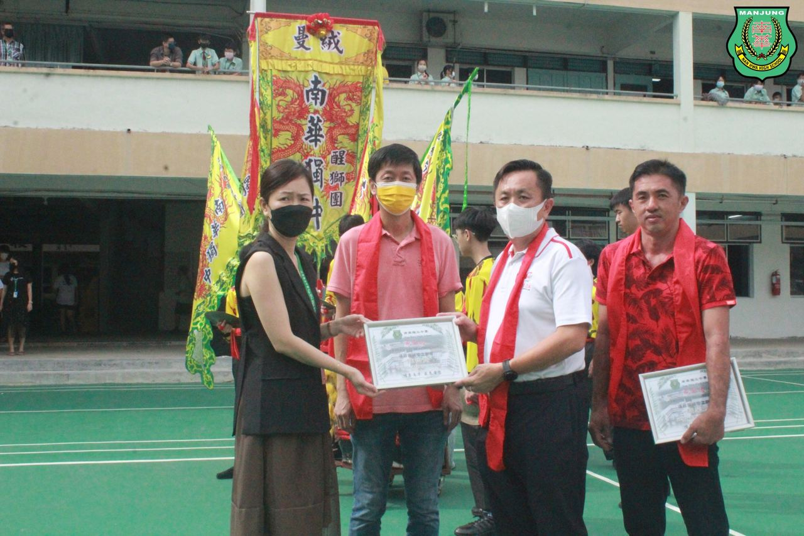
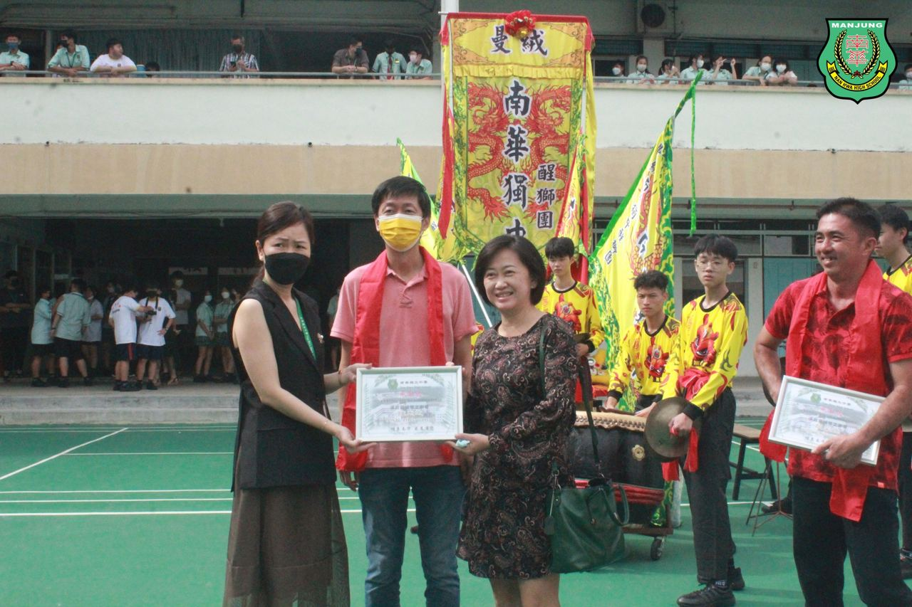
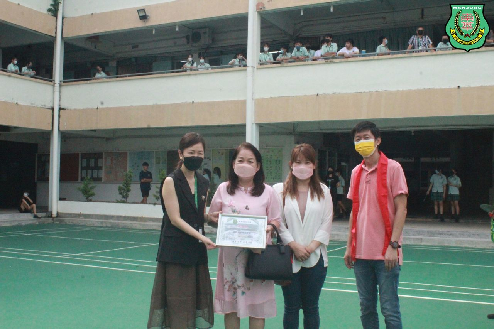
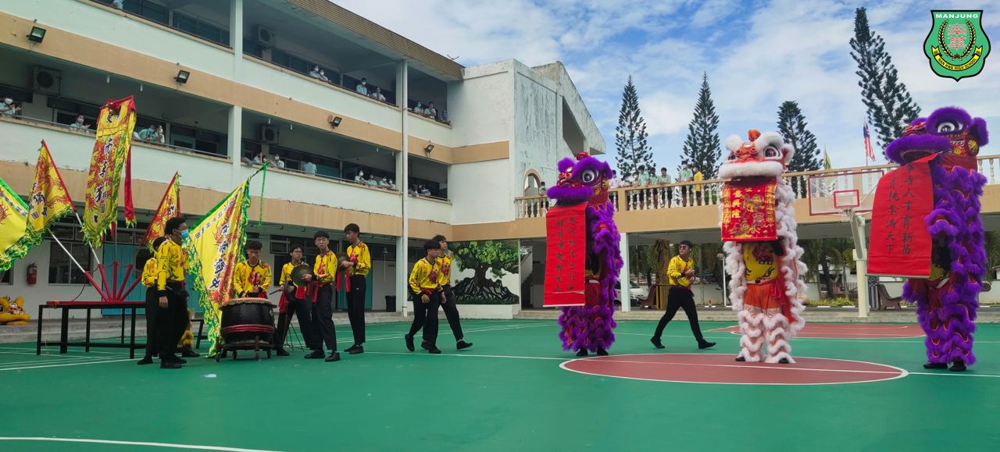
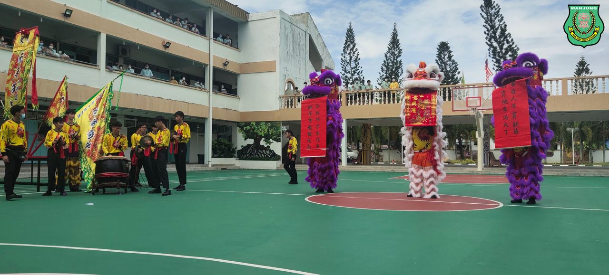

醒狮点睛有规矩
醒狮点睛有规矩
南华师生齐见证
舞狮与其他传统艺术一样也有许多规矩和禁忌，为了让全体师生更加认识醒狮文化，适逢学生家长捐赠三头雄狮予南华独中醒狮团，校方特此安排了一场向全校公开展示的“新狮点睛开光仪式”。
胡荣强先生、陈明贵先生与汤叶清女士各捐赠一头崭新的醒狮予南华独中。醒狮点睛仪式讲求良辰吉时与必要的程序，从灵光、双眼、鼻孔、口齿、双耳、颈肩、身腰、尾巴、手爪、脚步与贵角，顺序决不能颠倒。与此同时，陈惠芝女士亦赞助醒狮团新团服，穿上新团服的醒狮团团员显得神采飞扬，精神奕奕。
#点睛仪式 #南华独中醒狮团
#南华独中 #曼绒 #实兆远






